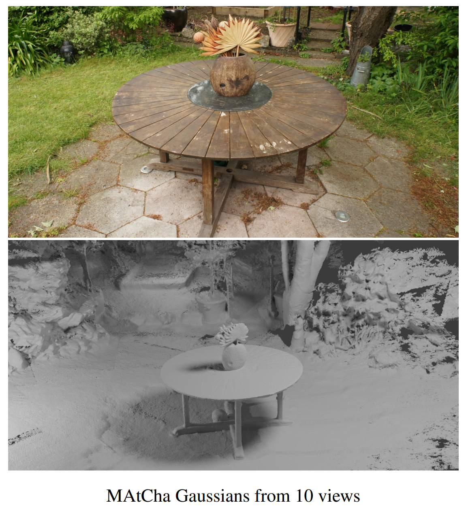
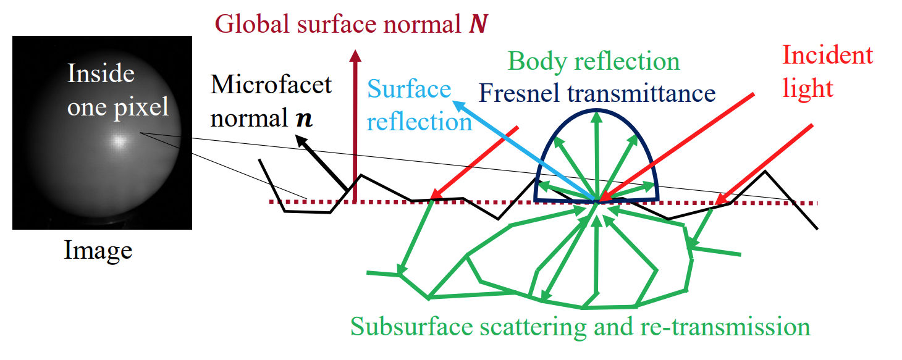

|
Tomoki Ichikawa I am a PhD student in the Graduate School of Infomatics at Kyoto University, advised by Professor Ko Nishino. My research interests include computer vision, physics-based vision, polarization-based vision, computational photography. Email / Google Scholar / GitHub / |
{kind=link}
ResearchI am interested in computer vision, especially physics-based vision, polarization-based vision, and computational photography. |

|
Spatial Polarization Multiplexing: Single-Shot Invisible Shape and Reflectance Recovery
Tomoki Ichikawa, Ryo Kawahara, Ko Nishino ICCP, 2026 project page / arxiv Single-shot shape and reflectance recovery method with invisible spatiall multiplexed polarization pattern, which can be applied to dynamic deforming surfaces. |
|
 |
MAtCha Gaussians: Atlas of Charts for High-Quality Geometry and Photorealism From Sparse Views
Antoine Guédon, Tomoki Ichikawa, Kohei Yamashita, Ko Nishino CVPR, 2025 project page / paper / arxiv We propose MAtCha Gaussians, a novel surface representation for reconstructing high-quality 3D meshes with photorealistic rendering from sparse-view images. Our key idea is to model the underlying scene geometry as an Atlas of Charts in 2D image planes, which we render with 2D Gaussian surfels. |

|
SPIDeRS: Structured Polarization for Invisible Depth and Reflectance Sensing
Tomoki Ichikawa, Shohei Nobuhara, Ko Nishino CVPR, 2024 project page / paper / arxiv We propose structured polarization, a novel invisible 3D shape, and reflectance sensing method using polarized light with per-pixel modulation of the angle of linear polarization. |
|
 |
Fresnel Microfacet BRDF: Unification of Polari-Radiometric Surface-Body Reflection
Tomoki Ichikawa, Yoshiki Fukao, Shohei Nobuhara, Ko Nishino CVPR, 2023 project page / paper / arxiv We derive Fresnel Microfacet BRDF, a novel physically-based BRDF model which consolidates radiometric and polarimetric reflections as well as body and surface reflections of surface microgeometry in a single model. |

|
Shape from Sky: Polarimetric Normal Recovery Under The Sky
Tomoki Ichikawa*, Matthew Purri*, Ryo Kawahara, Shohei Nobuhara, Kristin Dana, Ko Nishino (*Equal contribution) CVPR, 2021 project page / paper We introduce a novel method for reconstructing fine geometry of non-Lambertian objects from passive observations under the sky. The method fully leverages the polarimetric properties of sky and sun light encoded in the reflection by the surface to recover the surface normal at each pixel. |
NewsJuly 2026: I launched this website. |
|
Website source adapted from Jon Barron's academic website . |